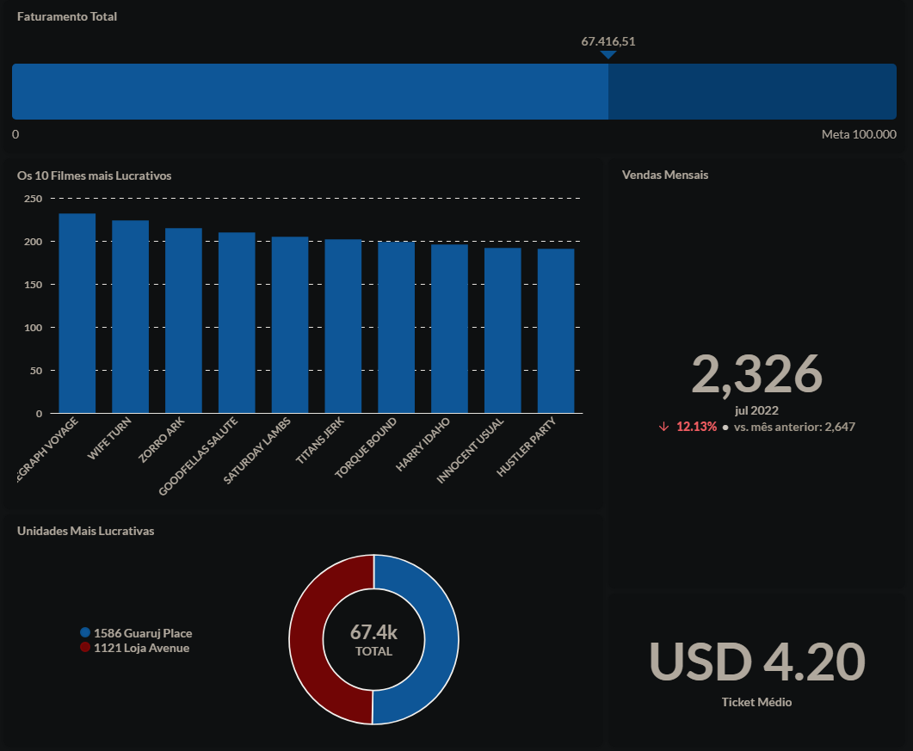

PROJETOS
Projetos e estudos de caso
Cases completos com contexto, decisões técnicas, arquitetura e resultados em desenvolvimento backend, dados e cloud.

DESTAQUE
ENGENHARIA DE DADOS
Data Engineering Project — End-to-End ETL & Analytics
Projeto prático de Engenharia de Dados focado na criação de um pipeline completo com Python, SQL e arquitetura de Data Warehouse. Envolveu extração de dados de banco transacional, transformação e modelagem em tabelas fato e dimensão, carga no Data Warehouse e criação de dashboards analíticos no Metabase para geração de insights de negócio.